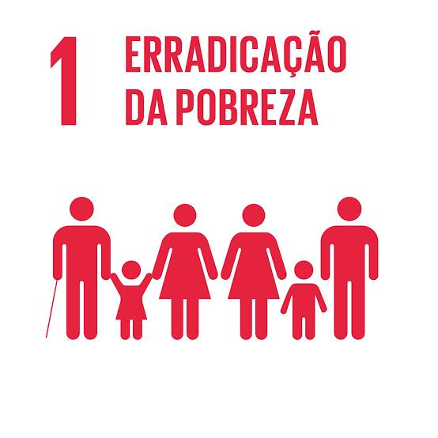

Acabar com a pobreza em todas as suas formas, em todos os lugares.
A ODS 1(Objetivo de Desenvolvimento Sustentável 1) busca acabar com a pobreza em todas as suas formas, em todos os lugares. Isso inclui garantir acesso a serviços básicos, proteção social e oportunidades para uma vida digna, especialmente para as populações mais vulneráveis.
A ODS 1 enfrenta desafios como a desigualdade social e econômica, o acesso desigual a serviços essenciais, os impactos das mudanças climáticas sobre os mais pobres, o crescimento populacional acelerado em algumas regiões e o alto índice de desemprego e trabalho informal. Esses fatores dificultam a superação da pobreza e aumentam a vulnerabilidade das populações mais carentes.